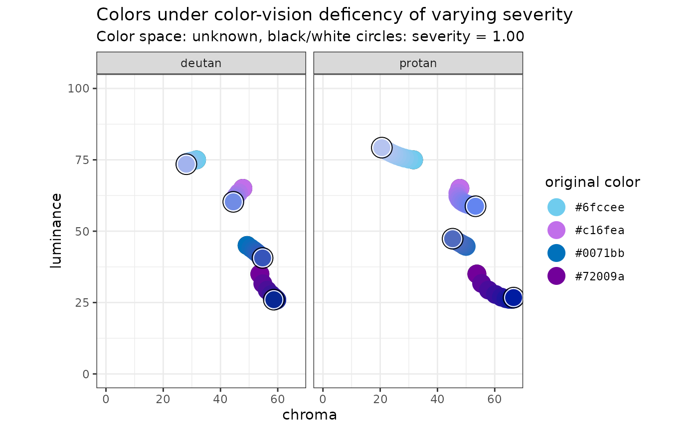
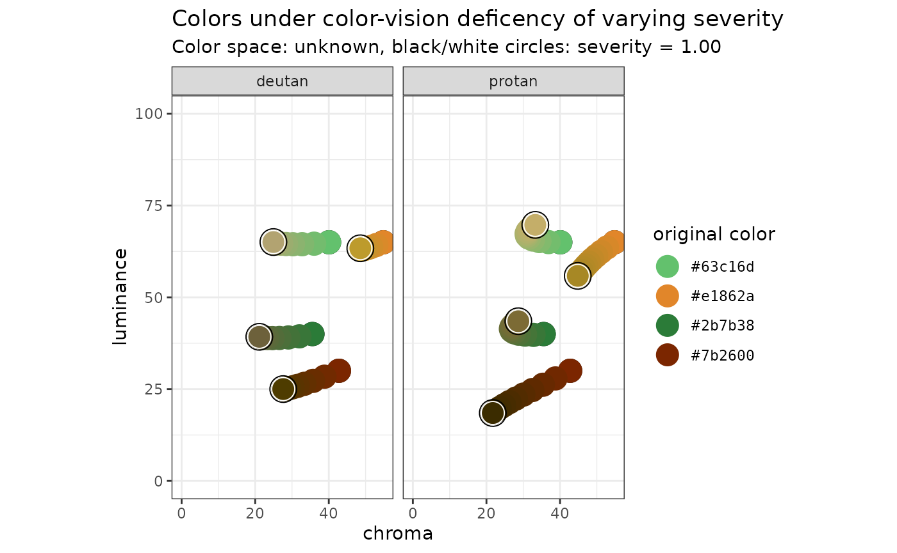

library("colorpath")
library("purrr")
library("glue")
library("ggplot2")
library("tibble")
library("dplyr")
#>
#> Attaching package: 'dplyr'
#> The following object is masked from 'package:glue':
#>
#> collapse
#> The following objects are masked from 'package:stats':
#>
#> filter, lag
#> The following objects are masked from 'package:base':
#>
#> intersect, setdiff, setequal, union
library("scales")
#>
#> Attaching package: 'scales'
#> The following object is masked from 'package:purrr':
#>
#> discardThe goal of this vignette is to show a way of building a categorical color-palette:
We will use the four surfaces introduced in the surfaces vignette.
# TODO: find a more-robust way to keep this in sync.
colors <- list(
blues = c("#42B4E6", "#0087CD"),
oranges = c("#E47F00", "#702407"),
greens = c("#007626", "#70E07C"),
purples = c("#3D1152", "#C530FF")
)
surfaces <- purrr::map(colors, pth_new_surface, transformer = pth_to_jzazbz100)We can look at how the outer edge of these surfaces “collapse” under color-vision deficiency:
Next, we can plot these colors in polar coordinates, using pth_plot_polar():
pth_plot_polar(mat_surfaces, cvd = pth_cvd_grid_full()) +
facet_grid(
rows = vars(condition),
cols = vars(severity),
labeller = labeller(severity = label_both)
) +
ggtitle(
label = "Outer (chroma) edge of surfaces, simulating color-vision deficiency",
subtitle = glue("Color space: {pth_colorspace_name(mat_surfaces)}")
)I am going to propose a design frameowrk, based on deuteranopia, because:
In short, I propose to choose:
It is clear that under full deuteranopia, for blues and purples, there is no variation in hue. Therefore, we will have to make things different using luminance and chroma.
blues_purples_first <-
tribble(
~name, ~luminance, ~saturation,
"blues", 80.0, 1.00,
"purples", 65.0, 1.00,
"purples", 45.0, 1.00,
"blues", 30.0, 1.00
)
get_color_cat_surfaces <- function(name, luminance, saturation = 1) {
pth_color_sfclumsat(surfaces[[name]], luminance, saturation)
}
blues_purples_cvd <-
pth_data_cvd(
blues_purples_mat,
cvd = pth_cvd_grid(
condition = c("deutan", "protan"),
severity = seq(0, 1, 0.1)
)
)
pth_plot_lumchroma(blues_purples_cvd)Here, we can see the measures we can take to keep these four colors more separated. We can see that, according to the color-vision deficiency models, the colors with the purple hue drop in luminance (and increase in chroma) as the severity increases.
With this in mind, we can choose the “original” colors to improve the separation at maximum severity.
blues_purples_second <-
tribble(
~name, ~luminance, ~saturation,
"blues", 75.0, 0.75,
"purples", 65.0, 0.77,
"purples", 35.0, 1.00,
"blues", 45.0, 1.00
)
blues_purples_cvd_second <-
pth_data_cvd(
blues_purples_mat_second,
cvd = pth_cvd_grid(
condition = c("deutan", "protan"),
severity = seq(0, 1, 0.1)
)
)
pth_plot_lumchroma(blues_purples_cvd_second)
We can do the same thing with greens and oranges:
greens_oranges <-
tribble(
~name, ~luminance, ~saturation,
"greens", 65.0, 0.65,
"oranges", 65.0, 0.90,
"oranges", 30.0, 1.00,
"greens", 40.0, 0.80
)
greens_oranges_cvd <-
pth_data_cvd(
greens_oranges_mat,
cvd = pth_cvd_grid(
condition = c("deutan", "protan"),
severity = seq(0, 1, 0.1)
)
)
pth_plot_lumchroma(greens_oranges_cvd)
Let’s get these colors together:
categorical_mat <-
rbind(blues_purples_mat_second, greens_oranges_mat) %>%
`[`(c(4, 6, 3, 5, 1, 7, 2, 8), )
categorical_hex <- pth_to_hex(categorical_mat)
colorspace::swatchplot(categorical_hex, cvd = TRUE)
show_col(categorical_hex)Our next task is to see the performance of the categorical palette, defined as the minimum distance between colors under CVD.
categorical_performance <-
categorical_mat %>%
pth_data_cat_euclid() %>%
filter(hex_original_a < hex_original_b) %>%
group_by(condition) %>%
arrange(distance, .by_group = TRUE) %>%
slice_head(n = 3) %>%
print()
#> # A tibble: 12 × 7
#> # Groups: condition [4]
#> hex_original_a hex_original_b condition severity hex_a hex_b distance
#> <chr> <chr> <fct> <dbl> <chr> <chr> <dbl>
#> 1 #2b7b38 #63c16d none 0 #2b7b38 #63c16d 25.4
#> 2 #72009a #c16fea none 0 #72009a #c16fea 30.6
#> 3 #0071bb #6fccee none 0 #0071bb #6fccee 36.6
#> 4 #0071bb #72009a deutan 1 #3655ba #072794 15.1
#> 5 #2b7b38 #7b2600 deutan 1 #6d613b #4e3c00 15.7
#> 6 #6fccee #c16fea deutan 1 #a2b3ee #718ce5 21.1
#> 7 #0071bb #c16fea protan 1 #506bbf #6385f0 13.9
#> 8 #63c16d #e1862a protan 1 #c4ae69 #a78825 18.1
#> 9 #2b7b38 #e1862a protan 1 #7c6b35 #a78825 20.3
#> 10 #0071bb #2b7b38 tritan 1 #008487 #237766 13.1
#> 11 #63c16d #6fccee tritan 1 #59bca7 #51d8d6 14.7
#> 12 #72009a #7b2600 tritan 1 #740e2f #971a1b 21.8Finally, let’s look at the highest and lowest luminance values for each condition. The motivation is that we want to stay away from the background color for both light mode and dark mode.
categorical_cvd <-
categorical_mat %>%
pth_data_cvd(pth_cvd_grid_severity(1)) %>%
group_by(condition)
categorical_cvd %>%
arrange(luminance, .by_group = TRUE) %>%
slice_head(n = 2) %>%
print()
#> # A tibble: 8 × 7
#> # Groups: condition [4]
#> condition severity hex_original luminance chroma hue hex
#> <fct> <dbl> <pth_hex> <dbl> <dbl> <dbl> <pth_hex>
#> 1 none 0 #7b2600 30 42.8 49.5 #7b2600
#> 2 none 0 #72009a 35 53.8 300. #72009a
#> 3 deutan 1 #7b2600 25.0 27.6 85.6 #4e3c00
#> 4 deutan 1 #72009a 26.0 58.6 260. #072794
#> 5 protan 1 #7b2600 18.5 21.7 84.3 #3b2c00
#> 6 protan 1 #72009a 26.7 66.6 260. #001ca1
#> 7 tritan 1 #72009a 27.4 37.1 18.3 #740e2f
#> 8 tritan 1 #7b2600 35.7 50.7 38.1 #971a1bWe can see that the #7b2600 color may be problematic in dark-mode. We need to be mindful that we have adquate separation from the luminance of the background.
categorical_cvd %>%
arrange(desc(luminance), .by_group = TRUE) %>%
slice_head(n = 2) %>%
print()
#> # A tibble: 8 × 7
#> # Groups: condition [4]
#> condition severity hex_original luminance chroma hue hex
#> <fct> <dbl> <pth_hex> <dbl> <dbl> <dbl> <pth_hex>
#> 1 none 0 #6fccee 75 31.6 231. #6fccee
#> 2 none 0 #e1862a 65 54.8 67.6 #e1862a
#> 3 deutan 1 #6fccee 73.5 28.1 264. #a2b3ee
#> 4 deutan 1 #63c16d 65.1 24.9 88.3 #b2a371
#> 5 protan 1 #6fccee 79.3 20.6 264. #b6c4f0
#> 6 protan 1 #63c16d 69.7 33.3 87.9 #c4ae69
#> 7 tritan 1 #6fccee 75.0 30.5 203. #51d8d6
#> 8 tritan 1 #e1862a 68.7 51.5 37.2 #ff726bIt looks like we are OK with light mode - in fact, this suggests the possibilty of using disctinct light-mode and dark-mode palettes.